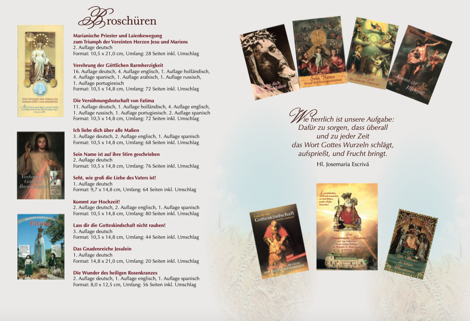
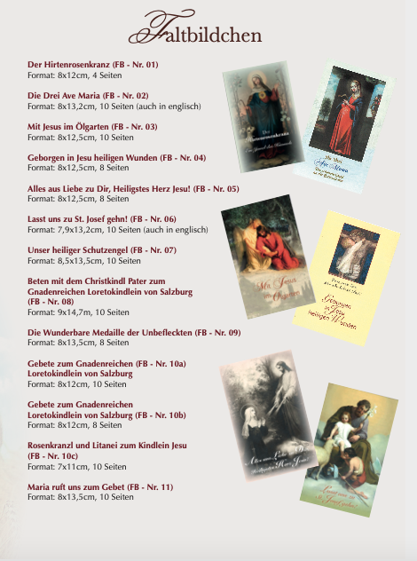
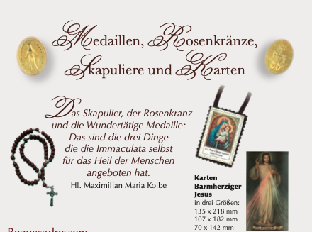
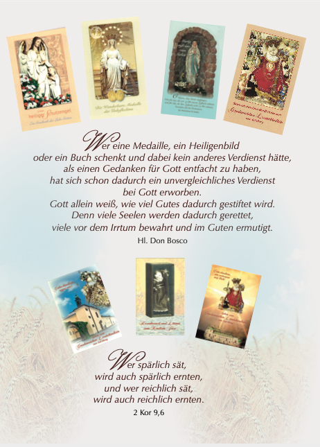

Bestellen
Singet dem Herrn und preist Seinen Namen, verkündet Sein Heil von Tag zu Tag. (Ps 96,2)
Vor Maria lernt man, wie wichtig, wie notwendig, wie segensreich die apostolische Arbeit zum Heil der Menschen ist. (Sel. Maria Theresia Ledóchowska)
Das Reich Gottes gleicht einem Senfkorn. Dieses ist das kleinste von allen Samenkörnern, die man in die Erde sät. Ist es aber gesät, dann geht es auf und wird größer als alle anderen Gewächse und treibt große Zweige, sodass in seinem Schatten die Vögel des Himmels nisten können. (Mk 4,30-32)
Übersicht Produkte



Broschüren
Marianische Priester- und Laienbewegung zum Triumph der Vereinten Herzen Jesu und Mariens
Auflagen: 2. Auflage deutsch
Format: 10,5 x 21,0 cm, 28 Seiten inkl. Umschlag
Verehrung der Göttlichen Barmherzigkeit
Auflagen: 16. Auflage deutsch, 4. Auflage englisch, 1. Auflage holländisch, 4. Auflage spanisch, 1. Auflage arabisch, 1. Auflage russisch, 1. Auflage portugiesisch
Format: 10,5 x 14,8 cm, 72 Seiten inkl. Umschlag
Die Versöhnungsbotschaft von Fatima
Auflagen: 11. Auflage deutsch, 1. Auflage holländisch, 4. Auflage englisch, 1. Auflage russisch, 1. Auflage portugiesisch, 2. Auflage spanisch
Format: 10,5 x 14,8 cm, 72 Seiten inkl. Umschlag
Ich liebe dich über alle Maßen
Auflagen: 3. Auflage deutsch, 2. Auflage englisch, 1. Auflage spanisch
Format: 10,5 x 14,8 cm, 68 Seiten inkl. Umschlag
Sein Name ist auf ihre Stirn geschrieben
Auflagen: 2. Auflage deutsch
Format: 10,5 x 14,8 cm, 76 Seiten inkl. Umschlag
Seht, wie groß die Liebe des Vaters ist!
Auflagen: 1. Auflage deutsch
Format: 9,7 x 14,8 cm, 64 Seiten inkl. Umschlag
Kommt zur Hochzeit!
Auflagen: 2. Auflage deutsch, 2. Auflage englisch, 1. Auflage spanisch
Format: 10,5 x 14,8 cm, 80 Seiten inkl. Umschlag
Lass dir die Gotteskindschaft nicht rauben!
Auflagen: 3. Auflage deutsch
Format: 10,5 x 14,8 cm, 44 Seiten inkl. Umschlag
Das Gnadenreiche Jesulein
Auflagen: 1. Auflage deutsch
Format: 14,8 x 21,0 cm, 20 Seiten inkl. Umschlag
Die Wunder des heiligen Rosenkranzes
Auflagen: 2. Auflage deutsch, 1. Auflage englisch, 1. Auflage spanisch
Format: 8,0 x 12,5 cm, 56 Seiten inkl. Umschlag
Das Skapulier unserer Lieben Frau vom Berge Karmel
Auflagen: 1. Auflage deutsch
Faltbildchen
Der Hirtenrosenkranz (FB - Nr. 01)
Format: 8 x 12 cm, 4 Seiten
Die Drei Ave Maria (FB - Nr. 02)
Format: 8 x 13,2 cm, 10 Seiten (auch in englisch)
Mit Jesus im Ölgarten (FB - Nr. 03)
Format: 8 x 12,5 cm, 10 Seiten
Geborgen in Jesu heiligen Wunden (FB - Nr. 04)
Format: 8 x 12,5 cm, 8 Seiten
Alles aus Liebe zu Dir, Heiligstes Herz Jesu! (FB - Nr. 05)
Format: 8 x 12,5 cm, 8 Seiten
Lasst uns zu St. Josef gehn! (FB - Nr. 06)
Format: 7,9 x 13,2 cm, 10 Seiten (auch in englisch)
Unser heiliger Schutzengel (FB - Nr. 07)
Format: 8,5 x 13,5 cm, 10 Seiten
Beten mit dem Christkindl Pater zum Gnadenreichen Loretokindlein von Salzburg (FB - Nr. 08)
Format: 9 x 14,7 cm, 10 Seiten
Die Wunderbare Medaille der Unbefleckten (FB - Nr. 09)
Format: 8 x 13,5 cm, 8 Seiten
Gebete zum Gnadenreichen Loretokindlein von Salzburg (FB - Nr. 10a)
Format: 8 x 12 cm, 10 Seiten
Gebete zum Gnadenreichen Loretokindlein von Salzburg (FB - Nr. 10b)
Format: 8 x 12 cm, 8 Seiten
Rosenkranzl und Litanei zum Kindlein Jesu (FB - Nr. 10c)
Format: 7 x 11 cm, 10 Seiten
Maria ruft uns zum Gebet (FB - Nr. 11)
Format: 8 x 13,5 cm, 10 Seiten

Medaillen, Rosenkränze, Skapuliere und Karten
Skapulier
"Wer mit diesem Gnadenkleid bekleidet sterben wird, der wird vor dem ewigen Feuer bewahrt bleiben. (Die Gottesmutter zum hl. Simon Stock)"Rosenkranz
"Der Rosenkranz und das Skapulier gehören untrennbar zusammen." (Sr. Lucia von Fatima)Karten Barmherziger Jesus
in drei Größen:
135 x 218 mm
107 x 142 mm
70 x 142 mm
Wie herrlich ist unsere Aufgabe: Dafür zu sorgen, dass überall und zu jeder Zeit das Wort Gottes Wurzeln schlägt, aufsprießt, und Frucht bringt. (Hl. Josemaria Escrivá)
Wer eine Medaille, ein Heiligenbild oder ein Buch schenkt und dabei kein anderes Verdienst hätte, als einen Gedanken für Gott entfacht zu haben, hat sich schon dadurch ein unvergleichliches Verdienst bei Gott erworben. Gott allein weiß, wie viel Gutes dadurch gestiftet wird. Denn viele Seelen werden dadurch gerettet, viele vor dem Irrtum bewahrt und im Guten ermutigt. (Hl. Don Bosco)
Wer spärlich sät, wird auch spärlich ernten, und wer reichlich sät, wird auch reichlich ernten. (2. Kor 9,6)
Die Produkte können kostenlos bezogen werden. Für jede Spende zur Deckung der Druckkosten sowie zur Förderung unseres katholischen Schriftenapostolates sagen wir ein herzliches Vergelt’s Gott!
Bezugsadressen:
Deutschland
Verein
bestellung-de@mpl-apostolate.com
Michaela Schnaiter
bestellung-de2@mpl-apostolate.com
Österreich
Susanne Rieser
bestellung-at@mpl-apostolate.com